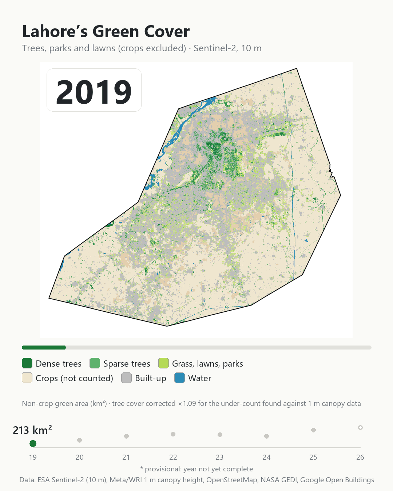
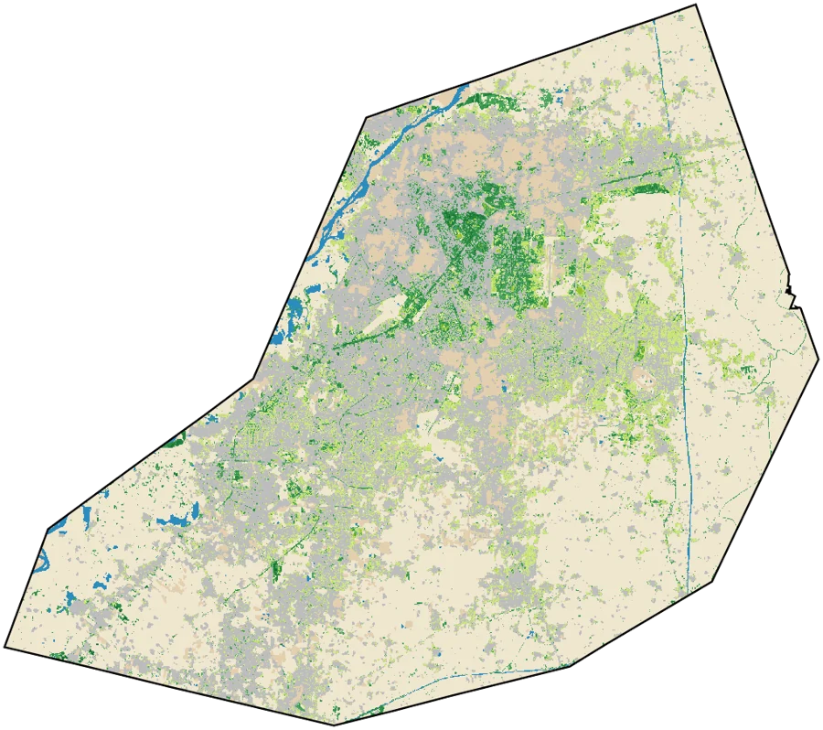
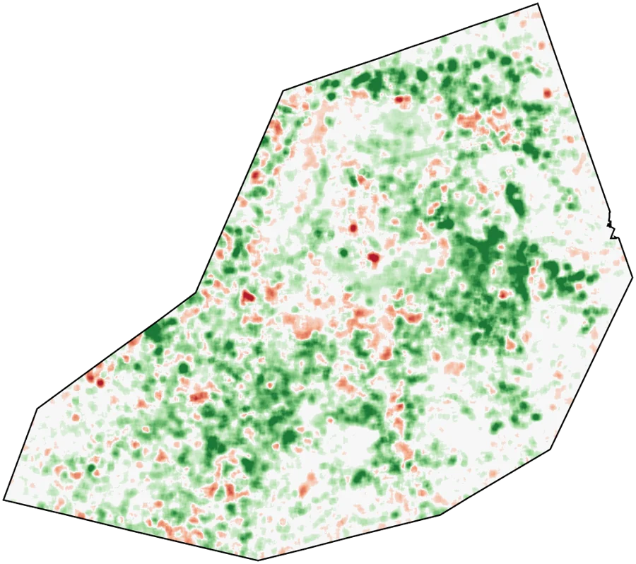
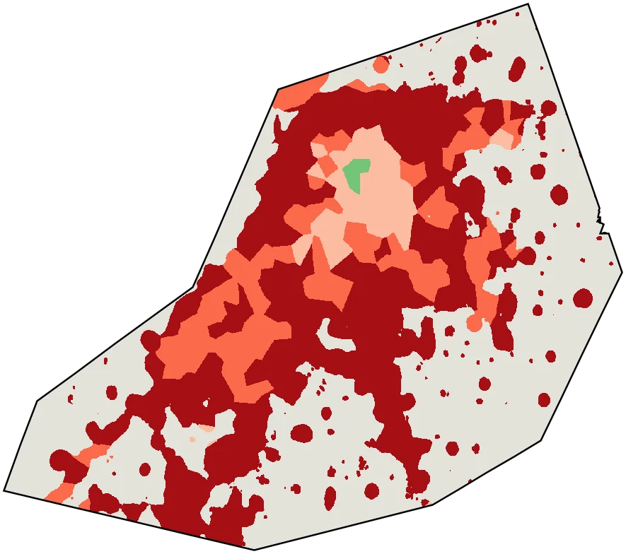

Lahore, slice by slice
Seven years of Sentinel-2 satellite images, read at 10 m. Where did the city's trees, lawns and parks grow, where did its farmland go, and who lives near green space?

Lahore is a little greener, mostly in grass
Non-crop green (trees, lawns, parks and grass, never crops) rose from 207 km² in 2019 to 241 km² in 2025. Tree cover barely moved; nearly all of the gain is grass and lawns.
Non-crop green area, km²
Trees and grass stacked; dashed line is the 2019–2025 trend. 2026 is provisional.
Show the numbers
Switch between 2019 and 2025
Dark green: trees · light green: grass, lawns, parks · grey: built-up · cream: farmland

Where green was gained and lost, 2019 → 2025
Change in the green share of the land, smoothed over about 400 m

The biggest gains are new housing schemes
Green share change in the 1 km² squares that changed most. Lawns, verges and young trees in schemes built on former fields count as new green, because the fields themselves were never counted.
Where green fell most
Names are the nearest reference place, not boundaries.
The city is growing over its fields
Between 2019 and 2025 Lahore lost about 66 km² of farmland, roughly 9%, while built-up land grew by about the same amount. Two independent maps agree on the size of the loss.
Change since 2019, km²
Farmland from this study's crop model; built-up from Google Dynamic World. 2026 is provisional.
Show the numbers
What happened to 2019's farmland by 2025
714 km² that both the crop model and Dynamic World called farmland in 2019
All of Lahore, in 100 squares
Every part of the district, about 1,695 km², split into six kinds of land. Each square is 1% of Lahore.
Green for whom?
How Lahore measures against three widely used green-space benchmarks, and how unevenly its trees are spread between neighbourhoods.
Tree canopy by neighbourhood, 2025
137 neighbourhoods; none reaches the 30% target

Leafiest neighbourhoods
Tree canopy, 2025 · a full bar would be the 30% target
Least canopy
Tree canopy, 2025 · a full bar would be the 30% target
How we know
The model was tested against data it never saw: held-out canopy maps, held-out OpenStreetMap parks, land that cannot change, NASA's GEDI space laser and Google Open Buildings. Verdict: partly supported. The direction is confirmed; the size of the change is an estimate.
Find your own neighbourhood
The live map lets you pick any year, compare two years, zoom into 450 neighbourhoods and villages, and click any spot to read its values.